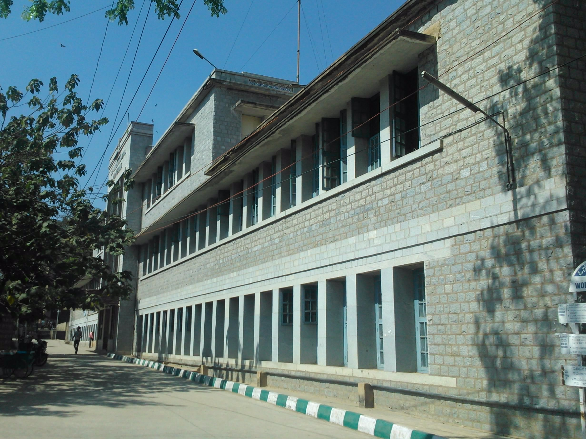
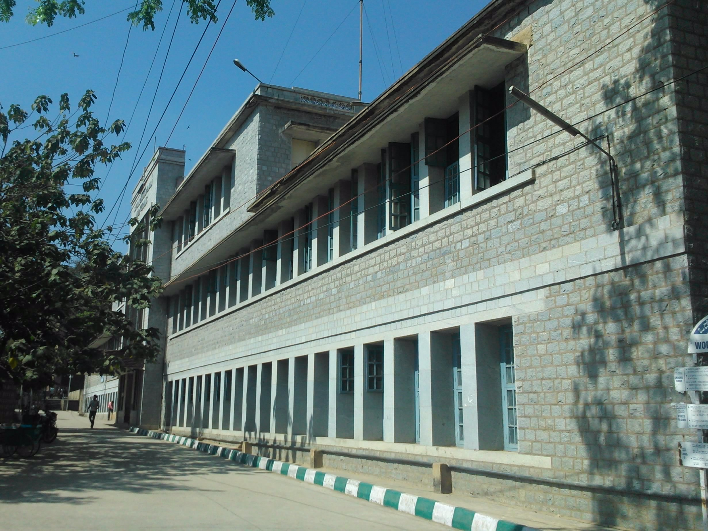

Quick Facts
Located in the heart of the high tech city Bangalore.
Hostel accommodation is available for boys on campus.
Assuring placement service.
Three NCC wings - army, navy and air force for both boys and girls.
NSS for the development of the personality of students through Community Service.
Excellent sporting infrastructure with participation at all levels.
Continuing Education Cell (CCTEK) for imparting short/full term training programs for faculty and students.
Women in development (WID) project for the empowerment of women.
Institution is in the process of applying for NBA Accreditation of four programmes
→Civil Engineering
→Computer Sciences and Engineering
→Electronics and Communication Engineering
→Mechanical Engineering
Thought of the Day:
To be successful you must accept all challenges that come your way.You can't just accept the ones you like.